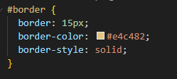
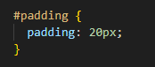
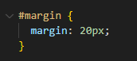

HTML & CSS Concepts
Technical Blog
The Basics
Elements in HTML have properties that help define the space they take up on a webpage, these properties are known as the padding, border and margin of the element.
But hold up, let’s backtrack quickly, what is an element.
Element’s are the building blocks that HTML uses to put content on a webpage. Every piece of content then takes up space on your page and the browser then displays it how it is told to by your HTML document and stylesheet (we’re using CSS in this example).

This is an example of those four regions of the element. The blue area is grossly out of scale but indicates the content of the element. The green area is the padding, the space between the content of the element and its border. The yellow area is the border, the space between the padding and the margin of the element. Finally the brown area is the margin, the space between an element’s border and another element.
Let’s explore this a little bit below with an example element like this image of some pohutukawa flowers.

Borders, explained.
Let’s start with the border. Because the border can be styled visually it is a lot easier to visualise it, because we can see it.
To start with we’re going to add a 20px border, we will give it the same yellow colour as the diagram above and make it a solid border.

See how our image above has gained this big yellow line around the edge of it. This is what is controlled by the border property in css.
Padding, explained.
Next up let’s look at the padding. We use padding to bulk up an element and it defines the space between the contents of our element, in this case our lovely image of pohutukawa flowers, and the border (the thick yellow line we made show earlier).
Let’s see what happens when we add padding of 20px to our image.

See how there is now a green space that’s shown up. This is the padding that we’ve added. A fun part of border, margin and padding is that their size can be adjusted on each side. This is done by defining the property and then the side ie. padding-left: 35px; will adjust the left hand padding to 35 pixels wide. Below I’ve adjusted the top, right, bottom and left padding to demonstrate this.
Margins, explained.
Lastly, margins help control the space outside of our element’s border and the other element’s on our page.
Let’s add a second Pohutukawa picture to better show this and adjust the margin size to demonstrate how this could be useful (I’ve also done a little bit of background magic so we can see the brown area and treat it like the margins in this case as the margin doesn't hold onto colours)

To extend on from the point at the end of padding about being able to adjust the top, sides and bottom of these properties there is a shorthand way of writing this in CSS.
This is simply by defining the property and then typing the values in a clockwise order, ie. margin: 5px 10px 20px 15px; will set the margin top to 5 pixels, right side to 10pixels, bottom to 20 pixels and the left margin to 15pixels.
Final Point.
In conclusion, understanding the use of margins, padding, and borders in HTML is essential for controlling the layout and spacing of elements on a webpage. Margins define the space outside an element's border, allowing for control over the separation between elements. Padding is employed to adjust the space between an element's content and its border, providing flexibility and aesthetic appeal. Borders, both visually styleable and structurally defining, contribute to the overall presentation of elements. By mastering these fundamental concepts, web developers can craft well-organised and visually appealing layouts, enhancing the user experience on their websites.